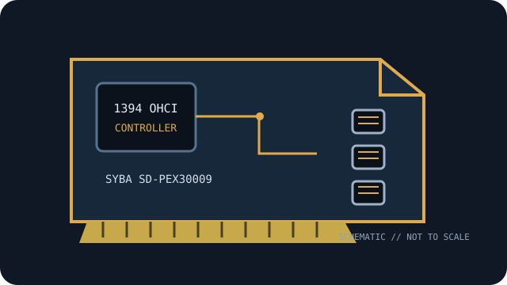

[ IEEE 1394 CONTROLLER // EXPANSION CARDS ]
SYBA SD-PEX30009
PCIe FireWire controller combining 1394b 800-Mb/s ports and 1394a 400-Mb/s connectivity. Verify the exact board label and revision before service.

MODEL SCOPE: SYBA SD-PEX30009. Specification distinctions below identify 1394a/1394b rates, physical bus and power limitations; host OS and driver support can change by revision and release.
Specifications and compatibility
| Exact model / SKU | SYBA SD-PEX30009 |
|---|---|
| Controller chipset | Texas Instruments XIO2213B IEEE 1394 controller, identified in the SYBA product documentation. |
| PCI bus / lanes | PCI Express x1. |
| IEEE 1394a rate | IEEE 1394a / FireWire 400, up to 400 Mb/s. |
| IEEE 1394b rate | IEEE 1394b / FireWire 800, up to 800 Mb/s; link rate negotiates with the attached device and cabling. |
| Ports and connectors | Two external 9-pin bilingual 1394b connectors, one external 6-pin 1394a connector, plus an internal 1394a connection as shown in SYBA documentation. |
| Power / bus-power notes | The model documentation shows an auxiliary 4-pin power input for bus-powered ports. Use it only as directed by the manual; 9-pin/6-pin bus-power availability and current limits depend on card revision and host supply. |
| OS driver compatibility | Use the SYBA driver package if required for the exact OS release; the controller is OHCI-class and may use in-box IEEE 1394 drivers on supported Windows, macOS or Linux systems. Verify the vendor download/release notes before deployment. |
| Host compatibility | Requires a PCIe x1 slot or compatible longer PCIe slot. Confirm the auxiliary power lead, device cable type and host OHCI driver; do not treat the mixed 1394a/b ports as interchangeable without a suitable cable. |
Installation and archival notes
- Match the card’s printed model/revision and connector layout to the cited maker documentation; do not infer a controller IC or current limit from the connector alone.
- IEEE 1394 link rate is negotiated with the peripheral and cable. A FireWire 800 connector does not make a 400-Mb/s device or cable operate at 800 Mb/s.
- Use ESD precautions; validate system bus wiring, driver version, peripheral power source, and application-level compatibility before replacing a working legacy host.
Manufacturer and standards sources
- SYBA USA — SD-PEX30009 product pageManufacturer product reference for the named part; check the specific board revision and documentation availability.
- SYBA USA — SD-PEX30009 manualAdditional maker documentation or official model-family reference.
- IEEE — IEEE 1394-2008 standardIEEE 1394 bus/protocol standard reference; card-level details are in the manufacturer documentation.
- Linux kernel — FireWire subsystem documentationOHCI/FireWire software-driver reference; platform-specific support remains OS-release dependent.